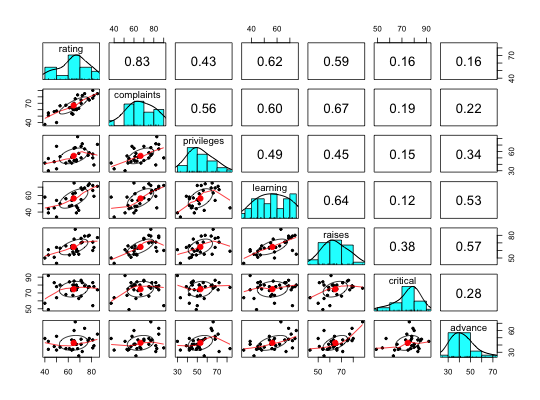

Adapted from the help page for pairs, pairs.panels shows a scatter plot of matrices (SPLOM), with bivariate scatter plots below the diagonal, histograms on the diagonal, and the Pearson correlation above the diagonal. Useful for descriptive statistics of small data sets. If lm=TRUE, linear regression fits are shown for both y by x and x by y. Correlation ellipses are also shown. Points may be given different colors depending upon some grouping variable.
# S3 method for panels
pairs(x, smooth = TRUE, scale = FALSE, density=TRUE,ellipses=TRUE,
digits = 2,method="pearson", pch = 20, lm=FALSE,cor=TRUE,jiggle=FALSE,factor=2,
hist.col="cyan",show.points=TRUE,rug=TRUE, breaks = "Sturges",cex.cor=1,wt=NULL,
smoother=FALSE,stars=FALSE, ...)
| x | a data.frame or matrix |
|---|---|
| smooth | TRUE draws loess smooths |
| scale | TRUE scales the correlation font by the size of the absolute correlation. |
| density | TRUE shows the density plots as well as histograms |
| ellipses | TRUE draws correlation ellipses |
| lm | Plot the linear fit rather than the LOESS smoothed fits. |
| digits | the number of digits to show |
| method | method parameter for the correlation ("pearson","spearman","kendall") |
| pch | The plot character (defaults to 20 which is a '.'). |
| cor | If plotting regressions, should correlations be reported? |
| jiggle | Should the points be jittered before plotting? |
| factor | factor for jittering (1-5) |
| hist.col | What color should the histogram on the diagonal be? |
| show.points | If FALSE, do not show the data points, just the data ellipses and smoothed functions |
| rug | if TRUE (default) draw a rug under the histogram, if FALSE, don't draw the rug |
| breaks | If specified, allows control for the number of breaks in the histogram (see the hist function) |
| cex.cor | If this is specified, this will change the size of the text in the correlations. this allows one to also change the size of the points in the plot by specifying the normal cex values. If just specifying cex, it will change the character size, if cex.cor is specified, then cex will function to change the point size. |
| wt | If specified, then weight the correlations by a weights matrix (see note for some comments) |
| smoother | If TRUE, then smooth.scatter the data points -- slow but pretty with lots of subjects |
| stars | For those people who like to show the significance of correlations by using magic astricks, set stars=TRUE |
| … | other options for pairs |
Shamelessly adapted from the pairs help page. Uses panel.cor, panel.cor.scale, and panel.hist, all taken from the help pages for pairs. Also adapts the ellipse function from John Fox's car package.
pairs.panels is most useful when the number of variables to plot is less than about 6-10. It is particularly useful for an initial overview of the data.
To show different groups with different colors, use a plot character (pch) between 21 and 25 and then set the background color to vary by group. (See the second example).
When plotting more than about 10 variables, it is useful to set the gap parameter to something less than 1 (e.g., 0). Alternatively, consider using cor.plot
In addition, when plotting more than about 100-200 cases, it is useful to set the plotting character to be a point. (pch=".")
Sometimes it useful to draw the correlation ellipses and best fitting lowess without the points. (points.false=TRUE).
A scatter plot matrix (SPLOM) is drawn in the graphic window. The lower off diagonal draws scatter plots, the diagonal histograms, the upper off diagonal reports the Pearson correlation (with pairwise deletion).
If lm=TRUE, then the scatter plots are drawn above and below the diagonal, each with a linear regression fit. Useful to show the difference between regression lines.
pairs which is the base from which pairs.panels is derived, cor.plot to do a heat map of correlations, and scatter.hist to draw a single correlation plot with histograms and best fitted lines.
To find the probability "significance" of the correlations using normal theory, use corr.test. To find confidence intervals using boot strapping procedures, use cor.ci. To graphically show confidence intervals, see cor.plot.upperLowerCi.
If the data are either categorical or character, this is flagged with an astrix for the variable name. If character, they are changed to factors before plotting.
The wt parameter allows for scatter plots of the raw data while showing the weighted correlation matrix (found by using cor.wt). The current implementation uses the first two columns of the weights matrix for all analyses. This is useful, but not perfect. The use of this option would be to plot the means from a statsBy analysis and then display the weighted correlations by specifying the means and ns from the statsBy run. See the final (not run) example.
pairs.panels(attitude) #see the graphics windowdata(iris) pairs.panels(iris[1:4],bg=c("red","yellow","blue")[iris$Species], pch=21,main="Fisher Iris data by Species") #to show color groupingpairs.panels(iris[1:4],bg=c("red","yellow","blue")[iris$Species], pch=21+as.numeric(iris$Species),main="Fisher Iris data by Species",hist.col="red")#to show changing the diagonal #to show 'significance' pairs.panels(iris[1:4],bg=c("red","yellow","blue")[iris$Species], pch=21+as.numeric(iris$Species),main="Fisher Iris data by Species",hist.col="red",stars=TRUE)#demonstrate not showing the data points data(sat.act) pairs.panels(sat.act,show.points=FALSE)#better yet is to show the points as a period pairs.panels(sat.act,pch=".")#show many variables with 0 gap between scatterplots # data(bfi) # pairs.panels(bfi,show.points=FALSE,gap=0) #plot raw data points and then the weighted correlations. #output from statsBy sb <- statsBy(sat.act,"education") pairs.panels(sb$mean,wt=sb$n) #report the weighted correlations#compare with pairs.panels(sb$mean) #unweighed correlations